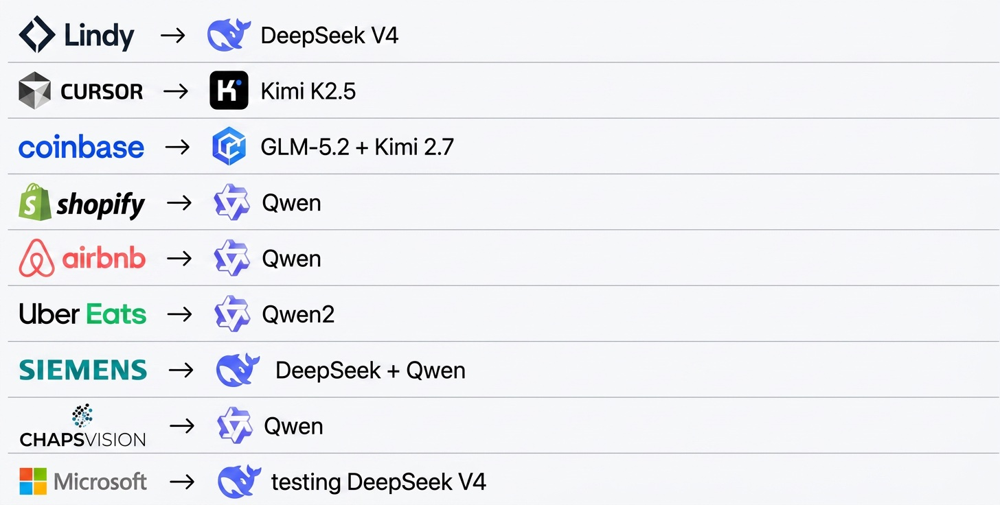

"You don't need God to write your email."
— Flo Crivello, Founder & CEO of Lindy, on switching from Anthropic to DeepSeek
Running the same AI workload costs $4,811 on Anthropic's Claude and $544 on Zhipu's GLM, a nearly nine-fold difference for equivalent work. That single comparison explains one of the quietest but most consequential shifts in enterprise technology in 2026: Shopify, Airbnb, Coinbase, Siemens, Uber Eats, and even Microsoft are moving significant AI workloads from premium US frontier models to dramatically cheaper alternatives, most of them Chinese open-weight models like DeepSeek, Qwen, Kimi, and GLM. The AI race, which began as a contest of raw capability, is turning into a procurement story, and the numbers behind it deserve a closer look than the viral list circulating on social media provides.
The List Everyone Is Sharing, Verified
You may have seen the table making the rounds: nine Western companies and the Chinese models they have adopted. Unlike much of what goes viral, this list holds up against reporting. Lindy, the San Francisco AI assistant company, switched from Anthropic's Claude to DeepSeek V4, with founder Flo Crivello saying the move saved the firm millions of dollars. Cursor's maker Anysphere adopted Moonshot's Kimi models. Coinbase CEO Brian Armstrong reported the company runs on open-weight GLM 5.2 and Kimi 2.7, cutting nearly half its AI spending even as token usage grew. Shopify and Airbnb both deployed Alibaba's Qwen, with Airbnb's CEO publicly praising it as "very good," "fast," and "cheap." Uber Eats runs Qwen. Siemens uses DeepSeek and Qwen. ChapsVision, the French data intelligence firm, built on Qwen. And Microsoft, whose entire Copilot franchise is built on OpenAI's models, is testing DeepSeek V4 for a lower-cost Copilot tier.

The switch list circulating in mid-2026: nine Western companies and the Chinese AI models now running their workloads.
The Price Gap, in Real Numbers
The economics driving these decisions are not subtle. Chinese open-weight models charge as little as 18 cents per million tokens, against an average of roughly $4 for top-tier Western models, and premium output pricing stretches the gap much further: DeepSeek's V4-Pro costs $3.48 per million output tokens, where OpenAI charges $30 and Anthropic $25 for comparable output. DeepSeek's smaller V4-Flash variant costs $0.28. Depending on the workload, the difference runs anywhere from 5x to 30x, and individual developers feel it directly: one US developer found that an hour-long coding session costing about $10 on Claude cost less than 50 cents on DeepSeek.
The aggregate shift is showing up in infrastructure data. On OpenRouter, the popular model-routing platform, open-source models processed 65% of all tokens in June, up from 34% in January. On Vercel, DeepSeek's share of token usage jumped from under 1% to 17% in a single month. And in February 2026, Chinese models processed 4.12 trillion tokens against 2.94 trillion for American models, crossing 60% of developer activity by May. A note of caution on the wilder claims, though: when JPMorgan asserted Chinese models were "50x cheaper," analysts who decomposed the number found the claim did not survive scrutiny. The real, defensible gap is closer to 5x to 30x depending on workload, which is still enormous.
The Insight Behind the Shift
The companies switching are not claiming Chinese models beat GPT or Claude at the frontier. They are claiming something more commercially important: that the vast majority of production AI workloads, summarization, extraction, classification, routine drafting, customer support, do not need frontier intelligence at all. Crivello's line captures it: you don't need God to write your email. Paying frontier prices for commodity tasks is the single largest source of waste in enterprise AI budgets today.
DeepSeek V4 Changed the Math
The inflection point came on April 24, 2026, when DeepSeek unveiled V4: a 1.6-trillion-parameter model with a one-million-token context window, trained on Huawei's Ascend processors rather than Nvidia hardware. By DeepSeek's own technical report, V4 falls marginally short of GPT-5.4 and Gemini 3.1 Pro, trailing the state of the art by roughly three to six months. That candor is precisely the point: for a fraction of the price, buyers get capability that was frontier-grade half a year ago, and for most business workloads, six-month-old frontier capability is indistinguishable from current frontier capability.
The Huawei angle matters beyond pricing. Training and serving on Ascend chips signals that the Chinese AI stack is decoupling from US hardware export controls, which is one reason Huawei announced "full support" for DeepSeek models and SMIC shares jumped 10% on the release. Meanwhile, US policy is amplifying the dynamic from the other side: new White House restrictions on frontier AI rollouts, and moves like the US directive suspending foreign access to Anthropic's most capable models, are narrowing the addressable market for US frontier AI at exactly the moment Chinese open-weight alternatives are surging. CNBC reported in late June that the crackdown "opens the door for Chinese model makers to close the gap." OpenAI is reportedly considering drastic token price reductions in response, a move that would signal it views the pricing threat as existential rather than peripheral.
The Receipts: What Switchers Actually Saved
The reported savings are concrete. Shopify achieved a 75-fold cost reduction moving workloads from OpenAI's GPT-5 to Qwen 3. Coinbase cut nearly half its total AI spending while consuming more tokens than before. Lindy's savings ran to millions of dollars annually. One developer profiled by Rest of World runs a two-tier setup that mirrors the corporate pattern in miniature: $500 a month on Claude and ChatGPT for genuinely complex tasks, $200 a month on Minimax, Kimi, and Xiaomi MiMo for the 90% of routine work that does not justify frontier pricing.
That two-tier pattern is the real strategic lesson. None of these companies abandoned frontier models entirely. They introduced model routing: matching each request to the cheapest model that handles it acceptably, reserving premium models for the minority of tasks that need them. This is the same right-sizing logic reshaping enterprise AI architecture generally, where fleets of task-specific agents increasingly run on small, cheap, specialized models rather than routing everything through one expensive generalist. The cost pressure is real even for the giants: SAP recently froze hiring and cut travel explicitly to fund its AI investments, a reminder that at enterprise scale, inference costs have become a board-level line item, at some companies now exceeding payroll growth.
The Risks the Viral List Leaves Out
The switch list circulates as a cost-savings story, but it is also a risk story, and both halves deserve equal attention. US lawmakers have opened investigations into Airbnb and Anysphere over their use of Chinese models, and the political exposure is not hypothetical in sectors like finance, defense, and healthcare. Data sovereignty is the first concern: sending corporate data to Chinese-hosted APIs raises questions no compliance team can wave away. Model provenance is the second: concerns about backdoors, censorship baked into model behavior, and long-term technological dependence are legitimate even when the models are open-weight.
The mitigation pattern among sophisticated adopters is consistent: they do not send data to Chinese APIs at all. Because DeepSeek, Qwen, GLM, and Kimi are open-weight, companies self-host them on their own infrastructure or run them through US cloud providers, getting Chinese model economics with Western data custody. That distinction, between using a Chinese-hosted service and running Chinese-originated open weights on your own hardware, is the single most important nuance the viral version of this story flattens. It is also why the shift has been described as quiet: companies are less worried about the engineering than the optics. The broader governance questions here, from provenance to auditability, follow the same framework we laid out in our analysis of generative AI risks enterprises actually need to manage.
The Decision Framework
Three questions determine whether cheaper open-weight models belong in your stack. First, workload triage: what share of your AI usage genuinely needs frontier capability? For most enterprises the honest answer is under 20%. Second, custody: can you self-host or route through a domestic cloud provider so no data touches foreign infrastructure? Third, exposure: are you in a sector where the political and regulatory optics outweigh the savings? If the answers are "small share, yes, and no," the 5-30x price gap is money you are leaving on the table every month.
What This Means for Enterprise AI Strategy
The deeper shift is that AI procurement is maturing from a capability race into a portfolio discipline. The first phase of enterprise AI was about securing access to the most powerful model available; the emerging phase is about matching the right model to the right task at the lowest sustainable cost. That is how every other category of enterprise technology evolved, from compute to storage to databases, and there was never a reason to believe AI would be different.
For technology leaders, the practical implications are threefold. Build model routing into your architecture now, so switching costs stay low and no vendor, American or Chinese, gains pricing leverage over you. Establish a custody policy before your engineering teams establish one for you informally, because the OpenRouter and Vercel numbers say adoption is already happening bottom-up. And treat the frontier vendors' coming price responses as negotiating leverage: when OpenAI is considering drastic cuts because Zhipu charges one-ninth the price, every enterprise renewal conversation has a new anchor. The companies on the viral list did not wait for permission to act on the math. The math is now public.